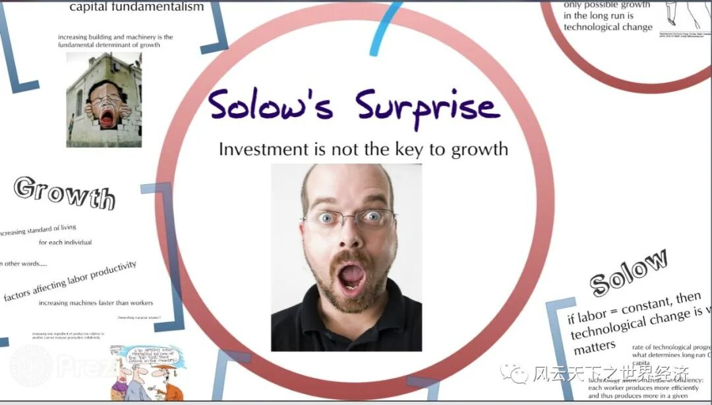

能够做到一个公式和术语符号都不用而能把增长理论说清楚，我用了二十年时间。头十年我一直在学习数学，然后用后十年把这些知识忘掉。
无用的投资
虽然很多人并不知道哈罗德和多马，但是，如果向有识之士咨询经济发展的妙方，不同的专家开出的菜单可能五花八门，但是他们的建议中大概率都会有这样一条——加强基础设施建设。这种观念上的偏执被苏联“大推进”式工业化践行者赫鲁晓夫一语道破——天底下的政治家都是一样的。即使没有河流，他们也会许诺建造大桥。
沃尔特河上的遗憾至少能够警醒我们，对于经济增长美好的祈愿并非依靠一个精巧的模型就可以实现，看似完美的理论在现实里遭到迎头痛击。有识之士在提建议的时候也许忘记了一个浅显的道理：在任何土地上洒下一把粮食，并不必然会长出丰硕的果实。根据这个逻辑，那些曾经响彻英国兰开夏、德意志鲁尔河谷以及美国底特律的机器轰鸣声，并非大量投资的必然结果。哈罗德和多马先生一定是忘记了什么，才会让“大量的投资实现长期增长”成为错误理论。
就像大多数经济学模型一样，错误就隐匿在其假定中。一块钱的投资在何时何地都可以创造出一个恒定不变的财富（固定的资本产出比），这个在增长理论中被称为“投资的生产率恒定”的假设，在现实里无论如何都是很难做到的。
印度裔美国经济学家巴格瓦蒂不无惋惜地说：“投资的生产率不是给定的，它受制于投资决策行为所处的政策框架和激励结构的效率”。80年代的印度也曾遭逢加纳相似的命运，其在经济增长上令人失望的表现与其说是“另外失望的储蓄率上的表现”，不如说是“令人失望的生产率上的表现”。最后，巴格瓦蒂的把生产率的低下归结到印度公共部门的预算软约束上，正是这种情况造成一种“混日子”的氛围，使得经济增长始终停留谋划阶段。
印度人民放弃消费而形成的储蓄以及海外的援助都是真金白银，但是由于种植到了有毒的土壤里，何以能够蘖生出明日财富之花？
这个谜题直到1956年才被美国经济学家罗伯特·索罗和斯旺解开。他们放弃了只有资本才能促进增长的限制性假设，将劳动力作为另外一种重要的生产要素引入模型之中，生产过程被一种称为柯布-道格拉斯的函数（或者更具一般形态的常替代弹性函数）所定义。尽管形式简约，但是其意义却非同凡响。如果劳动和资本是生产过程中不可或缺的两种要素投入，那么任何一种要素的单纯增加都会使得新创造的产出越来越少，即使是资本也不例外。
用和尚挑水的例子可以生动地类比这个过程。和尚挑水，他需要扁担和水桶，前者可以认为是劳动，后者便是实物资本。一个和尚和一副扁担水桶可以产生两桶水，但是再给这个和尚一副新的扁担水桶并不能让他挑来四桶水，依次类推。第二副扁担水桶看上去和第一副并无二致，但是它能创造的产出的的确是下降了。索罗将这个道理称为“要素的边际产出递减”原理。如果你还不能清晰地理解它，可以尝试以下思想实验：如果边际产出不递减，全世界人吃的粮食其实可以在一个花盆里种出来。
和尚挑水的经济学
要素的边际产出递减让索罗-斯旺模型获得了崭新的生命力，经济增长理论也藉由这个重要的设定而正式进入新古典时代。
这个原理反映了一个更加贴近现实逻辑：当提高机器与工人的比率时，每增加一台机器的收益将会越来越低。真理再往前一步便是深渊，基于这个逻辑，可以清楚地预见：一味地增加机器设备并不能获得长久的经济增长，索罗本人也为这个发现而感到“震惊”（Solow Surprise）。

索罗震惊
因为边际产出递减，所以单纯的机器投资对长期增长没有用。但是，经济史上的主要工业经济体在过去200年里已经维持2%的人均经济增长率长达200年，经济增长的确在发生着，如果投资无用的话，增长的源泉是什么呢？
从天而降的技术进步
给一个和尚更多的扁担水桶无法持续地提高他的产出，如果我们给他一台抽水机呢？技术革新显然可以帮助和尚逃离资本边际产出递减的绝望境地。
技术的作用就像火种降临人间，经济学家埃里克·琼斯把这种增长称之为“普罗米修斯”式的增长。
别担心，技术会拯救你
技术和资本促进经济增长的机制完全不同，它之所以不受边际产出递减的约束，在于技术所依赖的知识具有非竞争非排他的性质。当我在使用欧拉定理的时候，别人并不会因为我对它使用而降低使用的效果。欧拉定理也不会因为被频繁地使用而出现被损耗折旧，而抽水机这些机器设备显然不具备这样的“永续性“。
在索罗1957年的另一篇论文中，他利用当时仅有的半个世纪的美国经济统计数据对理论模型进行了拟合，发现到美国20世纪前半期人均产出的增长中，大约有7/8的部分无法用人口增长、劳动力供应增加或设备库存增加来解释，索罗将其归功于技术进步的贡献。
因为它来自一个估计方程的残差。至于它从何而来，模型无法给出解释，我们也不知道它从哪里来，也说不出来它是什么，又不想“假装了解它。因此，它被形象地称为“索罗余值”——也就是总产出中剔除了所有要素贡献之后的剩余。曾经担任美国经济学会主席的阿布拉莫维茨（Abramovitz）略带揶揄地评价道：“这个残差也就成了‘对我们无知的一种度量‘”。
索罗余值的存在也印证了经济学里的一个顽疾：那些能够被说明的东西往往并不重要；而真正重要的东西，却很少能够被解释清楚。
希腊神话中，火种来自于太阳神阿波罗的德尔斐神庙。技术进步牵系人类福祉，但是遗憾的是，索罗先生并没有告诉我们它从何而来。依据神谕，渴望幸福的人们唯有祈祷普罗米修斯再次降临。
像诗歌一样有用的内生增长理论
对于技术进步来源的追问成为之后经济增长理论发展的方向。第三波经济增长理论的浪潮（内生增长理论，Endogenous growth Theory, EGT）终于在1980年代中期姗姗而来。
早在1962年，阿罗的EGT先导模型中发现了了生产性活动具有自发性技术进步的特征。援引伦德伯格（Lundberg）1961年对于瑞典霍恩达尔钢铁厂的观察，这间工厂虽然在15年的时间里没有任何新的投资，生产的方式也没有显著的变化，但是公司的生产力平均每年增长2%,这被称为“霍恩达尔效应“。显然这种增长并非来自投资，它是累积生产的过程中自发产生。这一观察证明，工人有能力通过定期重复相同类型的动作来提高生产力，生产能力的提升是通过实践、自我完善和微小的创新来实现的。
实践即学习，经验带来增长。阿罗的“干中学理论“找到了技术进步的蛛丝马迹。
沿着这个路径，保罗·罗默和罗伯特·卢卡斯在1980年代寻求建立另一类增长模型，在这类模型中，长期人均收入的增加取决于“投资“决策，而非新古典增长理论未能解释的技术进步。要想做到这一点首先拓展传统实物（机器）投资的概念。研发（R&D）支出和以教育形式存在的人力资本可以作为一种特殊的投资引入生产过程。
拓展机器投资的内涵也是内生化技术进步的方向之一，如果技术进步内蕴于新的机器设备中，而某种特定的投资可以催生技术进步，那么将技术内生于模型便有了一个稳妥的方向。德龙和萨默斯的研究很快发现了设备投资和经济增长之间存在着强烈的关联性，经济增长的迷宫终于来到了它的最后一个关口。
借助研发、人力资本、教育等被赋予全新意义的旧概念，投资终于搭上了“内生技术进步“的救援号专列，得以逃离了边际回报递减的诅咒。
这些伟大的理论，对于那些渴望增长的穷苦人民，以及热衷于为穷国出谋划策的政策制定者有用吗？已经成为“上一代人“的索洛先生对此表示怀疑，他1956年的经典模型中并不打算否认创新往往是用钱买来的，是由利润驱动的。而真正的问题是，内生增长理论并没有”在整个经济的层面上说出一些有用的东西”。与大多数业已成名的经济学家不同，索罗先生总是能一针见血的直击问题要害——内生增长理论的一些 "更有力的结论 "是 "不需要的"，因为它们来自强有力的假设。
内生增长理论的舵手罗默先生并没有正面回应前辈的批评，而是采用了一种更为婉转的方式证明自己研究的价值。他认为经济学模型就像写诗，这既是形式上的胜利，也是内容上的胜利。诗歌往往篇幅简短，在方寸之间需要爆发惊人的能量，经济学建模也遵循类似的逻辑。借助高度抽象的数学符号，世界变得简约且美好，一切在繁复现实中不可辨别的增长因素会如跳跃的精灵般一一展露无遗。
但是，教育、科研和保护知识产权对于经济增长的作用是否需要经济学家复杂的证明？
从简单的AK模型到复杂到让人抓狂的随机冲击叠代模型，这些所谓挑战人类智力的作品充斥了《高级宏观经济学》的教科书，成为经济学人们穷经皓首的经典，但是它是否能为我们洞悉经济增长的秘密提供一些帮助？《波士顿环球报》专栏作家大卫·沃尔什（David Warsh）在他的《知识与国家财富》（Knowledge and the Wealth of Nations）一书中对罗默内生增长理论的评价道：这位富有创造力的经济学家在1990年关于增长的论文中并没有发现任何关于世界的新东西。相反，他扩展了经济学的格调和韵律。在他之前，增长理论对于知识型经济的刻画是何等粗鄙不堪，而罗默先生让这一理论变得婉约且优雅。
这是反讽，还是褒赞？
不管怎样，20世纪经济增长理论的三次浪潮已卷席而过，它们带给这个世界的见解除了横扫经济学顶级期刊之外，也曾在经济发展的宏大命题下在广阔的土地上御风而行。投资、储蓄、教育、人口、研发……这些增长关键词余音未息，但是它们是否已经让经济增长的秘密一览无余？
1973年，经济史学家诺斯和托马斯在《西方世界的兴起》一书中对这个问题的回答意味深长——（增长理论）所提出的增长要素：创新、规模经济、教育和资本积累，凡此种种，他们并非增长的源泉，它们就是增长本身。(The factors we have listed (innovation, economies of scale, education, capital accumulation etc.) are not causes of growth; they are growth.)
今日，关于经济增长的理论仍然在大踏步前进，但是它已然和经济增长的现实命题无关。